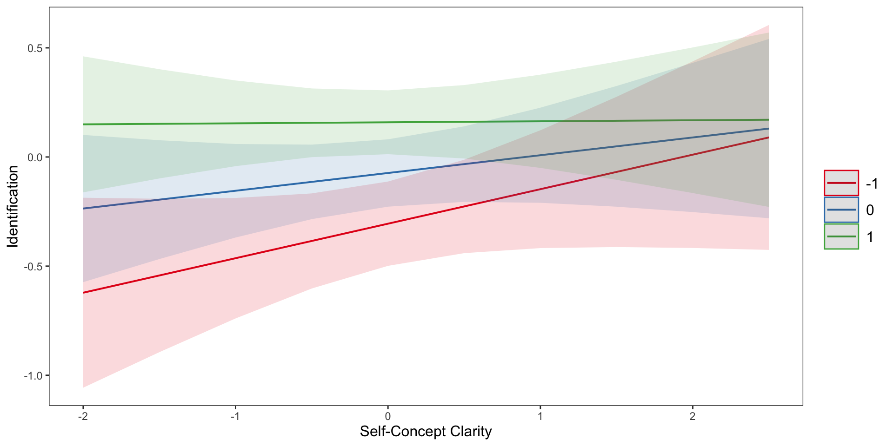
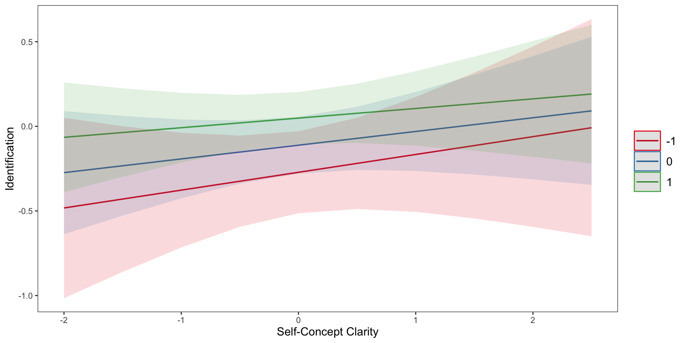
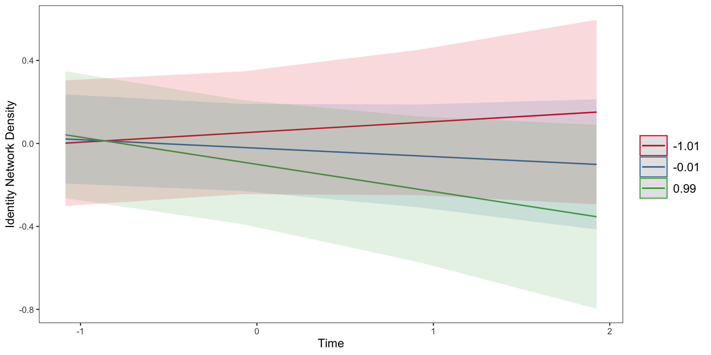

| effect | term | estimate | std.error | statistic | df | p.value | conf.low | conf.high |
|---|---|---|---|---|---|---|---|---|
| fixed | (Intercept) | 5.739210 | 0.1472259 | 38.982326 | 45.67050 | 0.00e+00 | 5.4428014 | 6.0356177 |
| fixed | Salient | 0.099669 | 0.0224607 | 4.437482 | 42.08862 | 6.44e-05 | 0.0543443 | 0.1449937 |
Longitudinal Modeling of Identity Relations and Experiences
Background
Motivations to identify with social groups
- XXX
- XXX
---
Multiple Identities
- XXX
- XXX
Items
Identification: I identify as XXX.
Positivity: How positive do you feel about being a member of this group: XX
Mutability: It is easy to leave membership of this group: XX
Entitativity: XX is a cohesive, united, and tight-knit group.
Group Similarity: XX people are similar to each other.
Self-Prototypicality: I am representative and fit the description of what it means to be XX
Items (continued)
Stigma: How stigmatized is XX ?
Size: To what extent do you feel your XX identity is small and not well-represented (i.e., minority) or large and well-represented (i.e., majority) at your university and in the United States?
Assimilation: I am included in the XX group and fit in/belong.
Differentiation: This group is distinct and different from other groups: XX
Items (continued)
- Warmth: Next we would like to get your feelings towards your XX identity and other XX groups using something we call the feeling thermometer that ranges from 0 to 100.
- Membership Uncertainty: I feel uncertain that I will be accepted by others as typical/representative of being XX
- Identity Uncertainty: I feel uncertain about the characteristics that define being XX
Items (continued)
Should: How often do you feel that you should engage in behaviors consistent with being XX? Consider how you generally think of yourself or others behaving, acting or feeling as a member of this group/identity.
Consistent: As of the past 1-2 weeks, I engaged in behaviors, thoughts, and feelings consistent with being XX. Consider how you generally think of yourself or others behaving, acting or feeling as a member of this group/identity.
Items (continued)
Salient: As of the past 1-2 weeks, how often did you have salient or meaningful experiences related to being XX? Consider how you generally think of yourself or others behaving, acting or feeling as a member of this group/identity.
Ideal: How important is it to you to belong to this group: XX?
Bad Experiences: As of the past 1-2 weeks, how many threatening, stressful, or stigmatizing experiences have you had related to being XX?
Items (continued)
Good Experiences: As of the past 1-2 weeks, how many positive and affirming experiences have you had related to being XX?
Categorized: As of the past 1-2 weeks, others perceive me as belonging to this group: XX.
Identification as a Function of Identity-Relevant Experiences
Salient identity-relevant events predict greater social identification
Positive Experiences Predict Greater Social Identification
| effect | term | estimate | std.error | statistic | df | p.value | conf.low | conf.high |
|---|---|---|---|---|---|---|---|---|
| fixed | (Intercept) | -0.0816772 | 0.0826306 | -0.9884623 | 81.69430 | 0.3258449 | -0.2460649 | 0.0827105 |
| fixed | GExp.Z | 0.1052982 | 0.0476218 | 2.2111362 | 41.00256 | 0.0326609 | 0.0091243 | 0.2014721 |
| fixed | BExp.Z | -0.0254766 | 0.0458696 | -0.5554147 | 63.91118 | 0.5805501 | -0.1171142 | 0.0661609 |
Feeling Prototypical Predicts Social Identification
| effect | term | estimate | std.error | statistic | df | p.value | conf.low | conf.high |
|---|---|---|---|---|---|---|---|---|
| fixed | (Intercept) | -0.0430557 | 0.0702240 | -0.613119 | 81.30378 | 0.5415091 | -0.1827716 | 0.0966602 |
| fixed | Proto.Z | 0.3444717 | 0.0395119 | 8.718181 | 81.02588 | 0.0000000 | 0.2658559 | 0.4230876 |
| fixed | Time.Z | -0.0762734 | 0.0306845 | -2.485733 | 38.35509 | 0.0173993 | -0.1383720 | -0.0141748 |
| fixed | Proto.Z:Time.Z | 0.0410991 | 0.0218755 | 1.878775 | 472.33293 | 0.0608909 | -0.0018862 | 0.0840844 |

Feeling assimilated predicts greater identification
| effect | term | estimate | std.error | statistic | df | p.value | conf.low | conf.high |
|---|---|---|---|---|---|---|---|---|
| fixed | (Intercept) | -0.0040097 | 0.0597241 | -0.0671365 | 82.45727 | 0.9466355 | -0.1228101 | 0.1147907 |
| fixed | A.Z | 0.4023700 | 0.0429387 | 9.3708025 | 87.50859 | 0.0000000 | 0.3170317 | 0.4877083 |
| fixed | Time.Z | -0.0708192 | 0.0254591 | -2.7816835 | 50.76989 | 0.0075713 | -0.1219361 | -0.0197023 |
| fixed | A.Z:Time.Z | 0.0641240 | 0.0203576 | 3.1498747 | 427.45862 | 0.0017481 | 0.0241105 | 0.1041374 |

More Positive and Less Bad Experiences Predict More Belonging
| effect | term | estimate | std.error | statistic | df | p.value | conf.low | conf.high |
|---|---|---|---|---|---|---|---|---|
| fixed | (Intercept) | -0.0046397 | 0.0638934 | -0.0726159 | 89.30869 | 0.9422742 | -0.1315885 | 0.1223092 |
| fixed | GExp.Z | 0.3942559 | 0.0421740 | 9.3483148 | 80.95319 | 0.0000000 | 0.3103421 | 0.4781697 |
| fixed | BExp.Z | 0.0918793 | 0.0372830 | 2.4643729 | 77.78197 | 0.0159310 | 0.0176512 | 0.1661074 |
| fixed | GExp.Z:BExp.Z | -0.0678747 | 0.0303195 | -2.2386514 | 255.50751 | 0.0260400 | -0.1275827 | -0.0081668 |

Perceiving group members as similar predicts more identification
| effect | term | estimate | std.error | statistic | df | p.value | conf.low | conf.high |
|---|---|---|---|---|---|---|---|---|
| fixed | (Intercept) | -0.1096540 | 0.0818377 | -1.339896 | 84.55916 | 0.1838688 | -0.2723814 | 0.0530735 |
| fixed | Sim.Z | 0.1931345 | 0.0384385 | 5.024509 | 90.62884 | 0.0000025 | 0.1167769 | 0.2694920 |
| fixed | Time.Z | -0.0576748 | 0.0330792 | -1.743537 | 33.25666 | 0.0904790 | -0.1249552 | 0.0096056 |
| fixed | Sim.Z:Time.Z | 0.0449516 | 0.0234393 | 1.917786 | 330.85941 | 0.0559987 | -0.0011573 | 0.0910604 |

Perceiving self as representative of group predicts more identification
| effect | term | estimate | std.error | statistic | df | p.value | conf.low | conf.high |
|---|---|---|---|---|---|---|---|---|
| fixed | (Intercept) | -0.0704719 | 0.0717634 | -0.982003 | 81.99865 | 0.3289870 | -0.2132321 | 0.0722884 |
| fixed | Proto.Z | 0.3109687 | 0.0388126 | 8.012065 | 77.77215 | 0.0000000 | 0.2336953 | 0.3882422 |
| fixed | Time.Z | -0.0657637 | 0.0298096 | -2.206127 | 35.94448 | 0.0338526 | -0.1262235 | -0.0053038 |
| fixed | Proto.Z:Time.Z | 0.0442167 | 0.0220043 | 2.009451 | 424.31827 | 0.0451220 | 0.0009656 | 0.0874677 |
Stigma Perception Predicts Greater Membership Uncertainty
| effect | term | estimate | std.error | statistic | df | p.value | conf.low | conf.high |
|---|---|---|---|---|---|---|---|---|
| fixed | (Intercept) | 0.0370017 | 0.0665883 | 0.5556781 | 73.06862 | 0.5801285 | -0.0957066 | 0.1697099 |
| fixed | St.Z | 0.1215680 | 0.0490200 | 2.4799664 | 55.92945 | 0.0161772 | 0.0233664 | 0.2197696 |
| fixed | Time.Z | -0.0588355 | 0.0359080 | -1.6385033 | 32.63873 | 0.1109226 | -0.1319216 | 0.0142507 |
| fixed | St.Z:Time.Z | 0.0601790 | 0.0271743 | 2.2145530 | 368.33092 | 0.0274023 | 0.0067427 | 0.1136153 |

Propagation
Spread of Positivity
As identity perceived more positively, it’s neighboring connected identities are also perceived more positively
| effect | term | estimate | std.error | statistic | df | p.value | conf.low | conf.high |
|---|---|---|---|---|---|---|---|---|
| fixed | (Intercept) | 6.3012117 | 0.3252715 | 19.372161 | 170.6162 | 0.0000000 | 5.6591369 | 6.9432864 |
| fixed | P | -0.1174912 | 0.0520890 | -2.255588 | 243.6869 | 0.0249841 | -0.2200933 | -0.0148892 |
| fixed | Time | -0.3274428 | 0.1245454 | -2.629104 | 281.0495 | 0.0090322 | -0.5726031 | -0.0822826 |
| fixed | P:Time | 0.0539989 | 0.0206880 | 2.610153 | 602.9423 | 0.0092750 | 0.0133696 | 0.0946282 |
Spread of Uncertainty About What It Means to be Identity
As people perceive more uncertainty about identity, it’s neighboring connected identities are also perceived uncertainly.
Linear mixed model fit by REML. t-tests use Satterthwaite's method [
lmerModLmerTest]
Formula: IdUnc_neigh.Z ~ IdUnc.Z * Time.Z + (IdUnc.Z | subID) + (Time.Z |
identity)
Data: fullData
REML criterion at convergence: 2192.7
Scaled residuals:
Min 1Q Median 3Q Max
-4.6905 -0.4687 0.0393 0.3822 4.0483
Random effects:
Groups Name Variance Std.Dev. Corr
identity (Intercept) 4.075e-03 0.063834
Time.Z 3.954e-05 0.006288 1.00
subID (Intercept) 2.348e-01 0.484608
IdUnc.Z 1.040e-01 0.322496 -0.17
Residual 3.672e-01 0.605975
Number of obs: 1057, groups: identity, 237; subID, 70
Fixed effects:
Estimate Std. Error df t value Pr(>|t|)
(Intercept) 0.03362 0.06448 51.52914 0.521 0.6043
IdUnc.Z 0.21728 0.05088 62.11929 4.271 6.8e-05 ***
Time.Z -0.03802 0.02169 890.32842 -1.753 0.0800 .
IdUnc.Z:Time.Z 0.04652 0.02353 955.28581 1.977 0.0483 *
---
Signif. codes: 0 '***' 0.001 '**' 0.01 '*' 0.05 '.' 0.1 ' ' 1
Correlation of Fixed Effects:
(Intr) IdUn.Z Time.Z
IdUnc.Z -0.136
Time.Z 0.050 0.016
IdUnc.Z:T.Z 0.015 0.116 0.063
optimizer (nloptwrap) convergence code: 0 (OK)
boundary (singular) fit: see help('isSingular')| effect | term | estimate | std.error | statistic | df | p.value | conf.low | conf.high |
|---|---|---|---|---|---|---|---|---|
| fixed | (Intercept) | 0.0336182 | 0.0644771 | 0.5213972 | 51.52914 | 0.6043239 | -0.0957928 | 0.1630292 |
| fixed | IdUnc.Z | 0.2172775 | 0.0508770 | 4.2706409 | 62.11929 | 0.0000680 | 0.1155796 | 0.3189753 |
| fixed | Time.Z | -0.0380199 | 0.0216920 | -1.7527104 | 890.32842 | 0.0799959 | -0.0805933 | 0.0045536 |
| fixed | IdUnc.Z:Time.Z | 0.0465245 | 0.0235323 | 1.9770509 | 955.28581 | 0.0483231 | 0.0003436 | 0.0927054 |
Spread of Self-Prototypicality
As people perceive themselves as more prototypical of a group, they also perceive themselves as more prototypical of connected groups
Linear mixed model fit by REML. t-tests use Satterthwaite's method [
lmerModLmerTest]
Formula: Proto_neigh.Z ~ Proto.Z * Time.Z + (Proto.Z | subID) + (Time.Z |
identity)
Data: fullData
REML criterion at convergence: 2281.6
Scaled residuals:
Min 1Q Median 3Q Max
-3.9619 -0.4711 -0.0127 0.4648 3.9245
Random effects:
Groups Name Variance Std.Dev. Corr
identity (Intercept) 0.026345 0.16231
Time.Z 0.009187 0.09585 -0.23
subID (Intercept) 0.489085 0.69935
Proto.Z 0.072377 0.26903 0.07
Residual 0.358321 0.59860
Number of obs: 1063, groups: identity, 237; subID, 70
Fixed effects:
Estimate Std. Error df t value Pr(>|t|)
(Intercept) -0.033226 0.089004 58.772133 -0.373 0.71026
Proto.Z 0.087269 0.045042 63.913744 1.937 0.05711 .
Time.Z 0.005779 0.023253 118.439845 0.249 0.80416
Proto.Z:Time.Z 0.065007 0.021508 618.916831 3.022 0.00261 **
---
Signif. codes: 0 '***' 0.001 '**' 0.01 '*' 0.05 '.' 0.1 ' ' 1
Correlation of Fixed Effects:
(Intr) Prot.Z Time.Z
Proto.Z 0.046
Time.Z 0.022 -0.012
Prot.Z:Tm.Z 0.000 0.113 0.083| effect | term | estimate | std.error | statistic | df | p.value | conf.low | conf.high |
|---|---|---|---|---|---|---|---|---|
| fixed | (Intercept) | -0.0332262 | 0.0890042 | -0.3733105 | 58.77213 | 0.7102605 | -0.2113377 | 0.1448853 |
| fixed | Proto.Z | 0.0872692 | 0.0450423 | 1.9374968 | 63.91374 | 0.0571060 | -0.0027154 | 0.1772538 |
| fixed | Time.Z | 0.0057791 | 0.0232532 | 0.2485294 | 118.43985 | 0.8041553 | -0.0402667 | 0.0518249 |
| fixed | Proto.Z:Time.Z | 0.0650070 | 0.0215083 | 3.0224121 | 618.91683 | 0.0026113 | 0.0227689 | 0.1072452 |
Spread of Group Similarity
As people perceive group members as more similar to one another, they also perceive members of connected groups as more similar to one another.
Linear mixed model fit by REML. t-tests use Satterthwaite's method [
lmerModLmerTest]
Formula: Sim_neigh.Z ~ Sim.Z * Time.Z + (Sim.Z | subID) + (Time.Z | identity)
Data: fullData
REML criterion at convergence: 2266.7
Scaled residuals:
Min 1Q Median 3Q Max
-4.8341 -0.4387 0.0282 0.4931 4.5138
Random effects:
Groups Name Variance Std.Dev. Corr
identity (Intercept) 0.0027273 0.05222
Time.Z 0.0009135 0.03022 -1.00
subID (Intercept) 0.4144350 0.64377
Sim.Z 0.0736273 0.27134 -0.04
Residual 0.3829230 0.61881
Number of obs: 1063, groups: identity, 237; subID, 70
Fixed effects:
Estimate Std. Error df t value Pr(>|t|)
(Intercept) 0.004639 0.081854 55.323492 0.057 0.95501
Sim.Z 0.101029 0.046134 55.315366 2.190 0.03277 *
Time.Z -0.013748 0.022430 473.584298 -0.613 0.54022
Sim.Z:Time.Z 0.066016 0.021471 871.819660 3.075 0.00217 **
---
Signif. codes: 0 '***' 0.001 '**' 0.01 '*' 0.05 '.' 0.1 ' ' 1
Correlation of Fixed Effects:
(Intr) Sim.Z Time.Z
Sim.Z -0.062
Time.Z 0.030 0.035
Sim.Z:Tim.Z 0.013 0.133 0.153
optimizer (nloptwrap) convergence code: 0 (OK)
boundary (singular) fit: see help('isSingular')| effect | term | estimate | std.error | statistic | df | p.value | conf.low | conf.high |
|---|---|---|---|---|---|---|---|---|
| fixed | (Intercept) | 0.0046390 | 0.0818537 | 0.0566738 | 55.32349 | 0.9550092 | -0.1593779 | 0.1686558 |
| fixed | Sim.Z | 0.1010287 | 0.0461340 | 2.1898956 | 55.31537 | 0.0327663 | 0.0085859 | 0.1934715 |
| fixed | Time.Z | -0.0137482 | 0.0224304 | -0.6129271 | 473.58430 | 0.5402187 | -0.0578236 | 0.0303272 |
| fixed | Sim.Z:Time.Z | 0.0660165 | 0.0214710 | 3.0746830 | 871.81966 | 0.0021729 | 0.0238756 | 0.1081573 |
Spread of Identity-Obligation on Connected Identification
Main effect of feeling like you are obligated to behave like your identity on connected identities
Linear mixed model fit by REML. t-tests use Satterthwaite's method [
lmerModLmerTest]
Formula: I_neigh.Z ~ Should.Z * Time.Z + (Should.Z | subID) + (Time.Z |
identity)
Data: fullData
REML criterion at convergence: 2163.9
Scaled residuals:
Min 1Q Median 3Q Max
-4.6465 -0.4075 0.1226 0.4801 4.1056
Random effects:
Groups Name Variance Std.Dev. Corr
identity (Intercept) 0.022529 0.15010
Time.Z 0.004936 0.07026 1.00
subID (Intercept) 0.609176 0.78050
Should.Z 0.008662 0.09307 -1.00
Residual 0.342830 0.58552
Number of obs: 1057, groups: identity, 237; subID, 70
Fixed effects:
Estimate Std. Error df t value Pr(>|t|)
(Intercept) -0.01907 0.09659 69.05763 -0.197 0.844064
Should.Z 0.10364 0.02806 154.33861 3.694 0.000306 ***
Time.Z -0.05179 0.02129 222.67100 -2.433 0.015764 *
Should.Z:Time.Z -0.02811 0.02057 664.29899 -1.366 0.172263
---
Signif. codes: 0 '***' 0.001 '**' 0.01 '*' 0.05 '.' 0.1 ' ' 1
Correlation of Fixed Effects:
(Intr) Shld.Z Time.Z
Should.Z -0.392
Time.Z 0.068 -0.063
Shld.Z:Tm.Z -0.005 0.112 0.007
optimizer (nloptwrap) convergence code: 0 (OK)
boundary (singular) fit: see help('isSingular')| effect | term | estimate | std.error | statistic | df | p.value | conf.low | conf.high |
|---|---|---|---|---|---|---|---|---|
| fixed | (Intercept) | -0.0190710 | 0.0965918 | -0.1974392 | 69.05763 | 0.8440638 | -0.2117635 | 0.1736214 |
| fixed | Should.Z | 0.1036422 | 0.0280571 | 3.6939700 | 154.33861 | 0.0003060 | 0.0482166 | 0.1590677 |
| fixed | Time.Z | -0.0517935 | 0.0212880 | -2.4329865 | 222.67100 | 0.0157638 | -0.0937452 | -0.0098417 |
| fixed | Should.Z:Time.Z | -0.0281144 | 0.0205750 | -1.3664404 | 664.29899 | 0.1722631 | -0.0685142 | 0.0122853 |
Degree Centrality and Identity Strength
Intergroup Bias
Number of connections weakly predicts bias
Linear mixed model fit by REML. t-tests use Satterthwaite's method [
lmerModLmerTest]
Formula: bias.Z ~ degree.Z * Time.Z + numID + (degree.Z | subID) + (numID |
identity)
Data: fullData
REML criterion at convergence: 2343.7
Scaled residuals:
Min 1Q Median 3Q Max
-4.4777 -0.3846 -0.0484 0.3288 4.5499
Random effects:
Groups Name Variance Std.Dev. Corr
identity (Intercept) 0.0060131 0.07754
numID 0.0005446 0.02334 1.00
subID (Intercept) 0.4712269 0.68646
degree.Z 0.0238600 0.15447 0.34
Residual 0.4686408 0.68457
Number of obs: 986, groups: identity, 228; subID, 71
Fixed effects:
Estimate Std. Error df t value Pr(>|t|)
(Intercept) 0.180660 0.204487 60.149818 0.883 0.380
degree.Z 0.087042 0.051237 20.909060 1.699 0.104
Time.Z -0.099485 0.024357 701.401908 -4.085 4.93e-05 ***
numID -0.022681 0.029615 56.455579 -0.766 0.447
degree.Z:Time.Z -0.002947 0.032192 145.510138 -0.092 0.927
---
Signif. codes: 0 '***' 0.001 '**' 0.01 '*' 0.05 '.' 0.1 ' ' 1
Correlation of Fixed Effects:
(Intr) degr.Z Time.Z numID
degree.Z 0.075
Time.Z 0.013 0.009
numID -0.899 0.007 0.002
degr.Z:Tm.Z 0.042 0.095 0.083 -0.047
optimizer (nloptwrap) convergence code: 0 (OK)
boundary (singular) fit: see help('isSingular')Strength of connections does not predict bias
Linear mixed model fit by REML. t-tests use Satterthwaite's method [
lmerModLmerTest]
Formula: bias.Z ~ strength.Z + Time.Z + numID + (strength.Z | subID) +
(numID | identity)
Data: fullData
REML criterion at convergence: 2343.2
Scaled residuals:
Min 1Q Median 3Q Max
-4.4727 -0.3836 -0.0526 0.3384 4.6052
Random effects:
Groups Name Variance Std.Dev. Corr
identity (Intercept) 0.0048676 0.06977
numID 0.0006546 0.02558 1.00
subID (Intercept) 0.4784900 0.69173
strength.Z 0.0031841 0.05643 0.03
Residual 0.4711582 0.68641
Number of obs: 986, groups: identity, 228; subID, 71
Fixed effects:
Estimate Std. Error df t value Pr(>|t|)
(Intercept) 0.15484 0.20960 63.29953 0.739 0.463
strength.Z 0.04480 0.03859 12.44543 1.161 0.267
Time.Z -0.09869 0.02401 700.92736 -4.110 4.42e-05 ***
numID -0.01898 0.03039 60.77201 -0.624 0.535
---
Signif. codes: 0 '***' 0.001 '**' 0.01 '*' 0.05 '.' 0.1 ' ' 1
Correlation of Fixed Effects:
(Intr) strn.Z Time.Z
strength.Z 0.125
Time.Z 0.007 0.005
numID -0.903 -0.119 0.008
optimizer (nloptwrap) convergence code: 0 (OK)
Model failed to converge with max|grad| = 0.0199692 (tol = 0.002, component 1)Modeling both simultaneously, number of connections weakly predicts bias
Linear mixed model fit by REML. t-tests use Satterthwaite's method [
lmerModLmerTest]
Formula: bias.Z ~ strength.Z + degree.Z + Time.Z + numID + (strength.Z |
subID) + (numID | identity)
Data: fullData
REML criterion at convergence: 2343.1
Scaled residuals:
Min 1Q Median 3Q Max
-4.5500 -0.3879 -0.0513 0.3399 4.6625
Random effects:
Groups Name Variance Std.Dev. Corr
identity (Intercept) 0.000000 0.00000
numID 0.001079 0.03285 NaN
subID (Intercept) 0.485832 0.69702
strength.Z 0.007978 0.08932 0.12
Residual 0.470321 0.68580
Number of obs: 986, groups: identity, 228; subID, 71
Fixed effects:
Estimate Std. Error df t value Pr(>|t|)
(Intercept) 0.14235 0.21065 63.12018 0.676 0.5016
strength.Z -0.15363 0.11801 384.47798 -1.302 0.1937
degree.Z 0.21769 0.11816 347.04456 1.842 0.0663 .
Time.Z -0.09881 0.02409 717.13105 -4.102 4.57e-05 ***
numID -0.01690 0.03067 61.38718 -0.551 0.5836
---
Signif. codes: 0 '***' 0.001 '**' 0.01 '*' 0.05 '.' 0.1 ' ' 1
Correlation of Fixed Effects:
(Intr) strn.Z degr.Z Time.Z
strength.Z 0.089
degree.Z -0.054 -0.934
Time.Z 0.008 -0.011 0.012
numID -0.904 -0.083 0.058 0.007
optimizer (nloptwrap) convergence code: 0 (OK)
boundary (singular) fit: see help('isSingular')Strength of identification
Number of connections does not predict strength of identification
| effect | term | estimate | std.error | statistic | df | p.value | conf.low | conf.high |
|---|---|---|---|---|---|---|---|---|
| fixed | (Intercept) | -0.0366163 | 0.0802839 | -0.4560849 | 82.12733 | 0.6495327 | -0.1963229 | 0.1230903 |
| fixed | degree.Z | 0.1036375 | 0.0728898 | 1.4218382 | 32.96812 | 0.1644653 | -0.0446634 | 0.2519383 |
But strength of connections does predict strength of identification
| effect | term | estimate | std.error | statistic | df | p.value | conf.low | conf.high |
|---|---|---|---|---|---|---|---|---|
| fixed | (Intercept) | -0.0314163 | 0.0751213 | -0.4182077 | 86.43887 | 0.6768324 | -0.1807417 | 0.1179091 |
| fixed | strength.Z | 0.1340614 | 0.0457861 | 2.9279946 | 32.31397 | 0.0062058 | 0.0408337 | 0.2272890 |
Ability to leave group membership (i.e., mutability)
Number of connections marginally negatively predicts mutability
| effect | term | estimate | std.error | statistic | df | p.value | conf.low | conf.high |
|---|---|---|---|---|---|---|---|---|
| fixed | (Intercept) | -0.0172527 | 0.0752945 | -0.2291359 | 116.2643 | 0.8191659 | -0.1663794 | 0.1318741 |
| fixed | degree.Z | -0.1178036 | 0.0629306 | -1.8719593 | 37.0731 | 0.0691175 | -0.2453047 | 0.0096975 |
Strength of connections more strongly negatively predicts mutability
| effect | term | estimate | std.error | statistic | df | p.value | conf.low | conf.high |
|---|---|---|---|---|---|---|---|---|
| fixed | (Intercept) | -0.0297935 | 0.0754667 | -0.3947901 | 112.21551 | 0.6937472 | -0.1793179 | 0.1197309 |
| fixed | strength.Z | -0.1339007 | 0.0622641 | -2.1505271 | 33.12792 | 0.0389044 | -0.2605594 | -0.0072420 |
Positivity of group
Number of connections don’t predict positivity
| effect | term | estimate | std.error | statistic | df | p.value | conf.low | conf.high |
|---|---|---|---|---|---|---|---|---|
| fixed | (Intercept) | -0.0466794 | 0.0800970 | -0.5827853 | 95.04515 | 0.5614180 | -0.2056911 | 0.1123324 |
| fixed | degree.Z | 0.0797573 | 0.0527861 | 1.5109525 | 18.83578 | 0.1473957 | -0.0307905 | 0.1903051 |
Strength of connections do more strongly negatively predicts positivity
| effect | term | estimate | std.error | statistic | df | p.value | conf.low | conf.high |
|---|---|---|---|---|---|---|---|---|
| fixed | (Intercept) | -0.0341566 | 0.0787940 | -0.4334923 | 93.19425 | 0.6656589 | -0.1906215 | 0.1223084 |
| fixed | strength.Z | 0.1182440 | 0.0538784 | 2.1946453 | 20.89362 | 0.0396335 | 0.0061630 | 0.2303251 |
Self-prototypicality
Number of connections don’t predict self-prototypicality
| effect | term | estimate | std.error | statistic | df | p.value | conf.low | conf.high |
|---|---|---|---|---|---|---|---|---|
| fixed | (Intercept) | -0.0086018 | 0.0806973 | -0.1065934 | 85.92543 | 0.9153600 | -0.1690248 | 0.1518212 |
| fixed | degree.Z | 0.0816730 | 0.0518705 | 1.5745557 | 28.48424 | 0.1264021 | -0.0244976 | 0.1878435 |
Strength of connections do more strongly predicts self-prototypicality
| effect | term | estimate | std.error | statistic | df | p.value | conf.low | conf.high |
|---|---|---|---|---|---|---|---|---|
| fixed | (Intercept) | -0.0093163 | 0.0796274 | -0.116999 | 85.39331 | 0.9071356 | -0.1676264 | 0.1489938 |
| fixed | strength.Z | 0.0920794 | 0.0470950 | 1.955186 | 28.10383 | 0.0605718 | -0.0043742 | 0.1885330 |
Individual Differences
Individual Differences in Bias
Need for Cognition
| effect | term | estimate | std.error | statistic | df | p.value | conf.low | conf.high |
|---|---|---|---|---|---|---|---|---|
| fixed | (Intercept) | 0.0346561 | 0.0896584 | 0.3865343 | 67.42331 | 0.7003182 | -0.1442822 | 0.2135943 |
| fixed | strength.Z | 0.0502093 | 0.0388835 | 1.2912728 | 15.86005 | 0.2151127 | -0.0322793 | 0.1326978 |
| fixed | Time.Z | -0.0988863 | 0.0242035 | -4.0856199 | 699.80264 | 0.0000490 | -0.1464064 | -0.0513661 |
| fixed | strength.Z:Time.Z | 0.0109038 | 0.0273880 | 0.3981250 | 75.05346 | 0.6916683 | -0.0436552 | 0.0654629 |
Self-Concept Clarity
| effect | term | estimate | std.error | statistic | df | p.value | conf.low | conf.high |
|---|---|---|---|---|---|---|---|---|
| fixed | (Intercept) | -0.0688032 | 0.0813505 | -0.8457624 | 81.35613 | 0.4001660 | -0.2306544 | 0.0930481 |
| fixed | Time.Z | -0.0625137 | 0.0360892 | -1.7321970 | 42.78602 | 0.0904429 | -0.1353051 | 0.0102777 |
| fixed | SCC.Z | 0.0475820 | 0.0786543 | 0.6049510 | 67.12643 | 0.5472512 | -0.1094072 | 0.2045712 |
| fixed | Time.Z:SCC.Z | -0.0028182 | 0.0363604 | -0.0775078 | 42.29247 | 0.9385851 | -0.0761814 | 0.0705450 |
Self-Esteem
| effect | term | estimate | std.error | statistic | df | p.value | conf.low | conf.high |
|---|---|---|---|---|---|---|---|---|
| fixed | (Intercept) | -0.0670163 | 0.0792680 | -0.8454387 | 82.05835 | 0.4003244 | -0.2247040 | 0.0906714 |
| fixed | Time.Z | -0.0628943 | 0.0360273 | -1.7457405 | 43.11366 | 0.0879795 | -0.1355447 | 0.0097561 |
| fixed | SE.Z | -0.1350032 | 0.0757364 | -1.7825392 | 66.36474 | 0.0792352 | -0.2862004 | 0.0161940 |
| fixed | Time.Z:SE.Z | 0.0143365 | 0.0358238 | 0.4001953 | 39.29828 | 0.6911799 | -0.0581065 | 0.0867795 |
Individual Differences in Changes in Identification
Need for Cognition
| effect | term | estimate | std.error | statistic | df | p.value | conf.low | conf.high |
|---|---|---|---|---|---|---|---|---|
| fixed | (Intercept) | -0.0687995 | 0.0806488 | -0.8530757 | 82.92544 | 0.3960747 | -0.2292088 | 0.0916098 |
| fixed | Time.Z | -0.0628322 | 0.0356573 | -1.7621135 | 42.66687 | 0.0852135 | -0.1347583 | 0.0090938 |
| fixed | NFC.Z | -0.0448364 | 0.0745974 | -0.6010449 | 67.02276 | 0.5498375 | -0.1937325 | 0.1040597 |
| fixed | Time.Z:NFC.Z | -0.0342193 | 0.0345505 | -0.9904152 | 42.78637 | 0.3275394 | -0.1039070 | 0.0354684 |
Self-Concept Clarity
| effect | term | estimate | std.error | statistic | df | p.value | conf.low | conf.high |
|---|---|---|---|---|---|---|---|---|
| fixed | (Intercept) | -0.0688032 | 0.0813505 | -0.8457624 | 81.35613 | 0.4001660 | -0.2306544 | 0.0930481 |
| fixed | Time.Z | -0.0625137 | 0.0360892 | -1.7321970 | 42.78602 | 0.0904429 | -0.1353051 | 0.0102777 |
| fixed | SCC.Z | 0.0475820 | 0.0786543 | 0.6049510 | 67.12643 | 0.5472512 | -0.1094072 | 0.2045712 |
| fixed | Time.Z:SCC.Z | -0.0028182 | 0.0363604 | -0.0775078 | 42.29247 | 0.9385851 | -0.0761814 | 0.0705450 |
Self-Esteem
| effect | term | estimate | std.error | statistic | df | p.value | conf.low | conf.high |
|---|---|---|---|---|---|---|---|---|
| fixed | (Intercept) | -0.0670163 | 0.0792680 | -0.8454387 | 82.05835 | 0.4003244 | -0.2247040 | 0.0906714 |
| fixed | Time.Z | -0.0628943 | 0.0360273 | -1.7457405 | 43.11366 | 0.0879795 | -0.1355447 | 0.0097561 |
| fixed | SE.Z | -0.1350032 | 0.0757364 | -1.7825392 | 66.36474 | 0.0792352 | -0.2862004 | 0.0161940 |
| fixed | Time.Z:SE.Z | 0.0143365 | 0.0358238 | 0.4001953 | 39.29828 | 0.6911799 | -0.0581065 | 0.0867795 |
Individual Differences in Changes in Mutability
Need for Cognition
| effect | term | estimate | std.error | statistic | df | p.value | conf.low | conf.high |
|---|---|---|---|---|---|---|---|---|
| fixed | (Intercept) | 0.0250026 | 0.0742595 | 0.3366920 | 121.26148 | 0.7369310 | -0.1220105 | 0.1720157 |
| fixed | Time.Z | 0.1404177 | 0.0364259 | 3.8548869 | 35.95442 | 0.0004601 | 0.0665393 | 0.2142961 |
| fixed | NFC.Z | 0.1143846 | 0.0687473 | 1.6638423 | 89.08856 | 0.0996578 | -0.0222129 | 0.2509820 |
| fixed | Time.Z:NFC.Z | -0.0001867 | 0.0352673 | -0.0052928 | 35.98660 | 0.9958062 | -0.0717130 | 0.0713397 |
Self-Concept Clarity
| effect | term | estimate | std.error | statistic | df | p.value | conf.low | conf.high |
|---|---|---|---|---|---|---|---|---|
| fixed | (Intercept) | 0.0233660 | 0.0755747 | 0.3091780 | 117.76637 | 0.7577325 | -0.1262955 | 0.1730276 |
| fixed | Time.Z | 0.1375040 | 0.0358818 | 3.8321359 | 35.62027 | 0.0004962 | 0.0647053 | 0.2103026 |
| fixed | SCC.Z | 0.0093483 | 0.0716662 | 0.1304428 | 85.57896 | 0.8965222 | -0.1331293 | 0.1518259 |
| fixed | Time.Z:SCC.Z | -0.0559817 | 0.0363426 | -1.5403911 | 35.34602 | 0.1323709 | -0.1297352 | 0.0177718 |
Self-Esteem
| effect | term | estimate | std.error | statistic | df | p.value | conf.low | conf.high |
|---|---|---|---|---|---|---|---|---|
| fixed | (Intercept) | 0.0302339 | 0.0757970 | 0.3988804 | 120.00001 | 0.6906902 | -0.1198388 | 0.1803067 |
| fixed | Time.Z | 0.1375106 | 0.0361647 | 3.8023409 | 35.97279 | 0.0005349 | 0.0641632 | 0.2108580 |
| fixed | SE.Z | -0.0665130 | 0.0685000 | -0.9709936 | 77.19126 | 0.3345843 | -0.2029085 | 0.0698824 |
| fixed | Time.Z:SE.Z | 0.0552706 | 0.0360696 | 1.5323323 | 33.04009 | 0.1349607 | -0.0181102 | 0.1286515 |
Individual Differences in the Effect of Obligation on Identification
Need for Cognition
| effect | term | estimate | std.error | statistic | df | p.value | conf.low | conf.high |
|---|---|---|---|---|---|---|---|---|
| fixed | (Intercept) | -0.0659642 | 0.0786355 | -0.8388604 | 82.82750 | 0.4039622 | -0.2223720 | 0.0904435 |
| fixed | Should.Z | 0.2331472 | 0.0383889 | 6.0732944 | 48.64305 | 0.0000002 | 0.1559875 | 0.3103070 |
| fixed | NFC.Z | -0.0566372 | 0.0738891 | -0.7665157 | 71.40721 | 0.4458963 | -0.2039534 | 0.0906790 |
| fixed | Should.Z:NFC.Z | 0.0485125 | 0.0374654 | 1.2948625 | 46.92033 | 0.2017034 | -0.0268615 | 0.1238864 |

Self-Concept Clarity
At lower levels of self-concept clarity, feeling like you should behave like your group predicts more identification.
| effect | term | estimate | std.error | statistic | df | p.value | conf.low | conf.high |
|---|---|---|---|---|---|---|---|---|
| fixed | (Intercept) | -0.0733494 | 0.0787241 | -0.931727 | 82.59712 | 0.3541931 | -0.2299398 | 0.0832410 |
| fixed | Should.Z | 0.2322782 | 0.0379522 | 6.120283 | 46.20617 | 0.0000002 | 0.1558936 | 0.3086628 |
| fixed | SCC.Z | 0.0814015 | 0.0771705 | 1.054826 | 71.10722 | 0.2950756 | -0.0724681 | 0.2352711 |
| fixed | Should.Z:SCC.Z | -0.0767131 | 0.0397559 | -1.929602 | 44.81620 | 0.0600014 | -0.1567947 | 0.0033685 |

Self-Esteem
| effect | term | estimate | std.error | statistic | df | p.value | conf.low | conf.high |
|---|---|---|---|---|---|---|---|---|
| fixed | (Intercept) | -0.0621880 | 0.0773342 | -0.8041463 | 82.98770 | 0.4236101 | -0.2160029 | 0.0916269 |
| fixed | Should.Z | 0.2334304 | 0.0388119 | 6.0144107 | 46.33476 | 0.0000003 | 0.1553215 | 0.3115394 |
| fixed | SE.Z | -0.1366985 | 0.0746615 | -1.8309099 | 70.59747 | 0.0713341 | -0.2855840 | 0.0121870 |
| fixed | Should.Z:SE.Z | 0.0376479 | 0.0381047 | 0.9880120 | 41.25660 | 0.3289061 | -0.0392916 | 0.1145875 |
Individual Differences in the Effect of Salience on Identification
Need for Cognition
| effect | term | estimate | std.error | statistic | df | p.value | conf.low | conf.high |
|---|---|---|---|---|---|---|---|---|
| fixed | (Intercept) | -0.0692116 | 0.0807715 | -0.8568820 | 84.06687 | 0.3939462 | -0.2298327 | 0.0914095 |
| fixed | Salient.Z | 0.1591475 | 0.0365170 | 4.3581804 | 41.68362 | 0.0000838 | 0.0854367 | 0.2328583 |
| fixed | NFC.Z | -0.0461612 | 0.0753133 | -0.6129226 | 70.26375 | 0.5419063 | -0.1963590 | 0.1040365 |
| fixed | Salient.Z:NFC.Z | 0.0463550 | 0.0359045 | 1.2910621 | 46.54040 | 0.2030584 | -0.0258944 | 0.1186044 |
Self-Concept Clarity
| effect | term | estimate | std.error | statistic | df | p.value | conf.low | conf.high |
|---|---|---|---|---|---|---|---|---|
| fixed | (Intercept) | -0.0688211 | 0.0817221 | -0.8421358 | 82.45401 | 0.4021479 | -0.2313791 | 0.0937368 |
| fixed | Salient.Z | 0.1647963 | 0.0377718 | 4.3629459 | 41.37280 | 0.0000835 | 0.0885355 | 0.2410572 |
| fixed | SCC.Z | 0.0461321 | 0.0796971 | 0.5788431 | 69.42287 | 0.5645684 | -0.1128420 | 0.2051062 |
| fixed | Salient.Z:SCC.Z | -0.0061983 | 0.0384905 | -0.1610339 | 42.65983 | 0.8728269 | -0.0838396 | 0.0714431 |

Self-Esteem
| effect | term | estimate | std.error | statistic | df | p.value | conf.low | conf.high |
|---|---|---|---|---|---|---|---|---|
| fixed | (Intercept) | -0.0647044 | 0.0801508 | -0.8072823 | 83.76201 | 0.4217903 | -0.2240997 | 0.0946910 |
| fixed | Salient.Z | 0.1616043 | 0.0371861 | 4.3458299 | 40.16597 | 0.0000920 | 0.0864581 | 0.2367504 |
| fixed | SE.Z | -0.1175631 | 0.0772372 | -1.5221042 | 70.26010 | 0.1324712 | -0.2715979 | 0.0364717 |
| fixed | Salient.Z:SE.Z | 0.0349802 | 0.0361116 | 0.9686685 | 34.17491 | 0.3395165 | -0.0383936 | 0.1083539 |
`Should.Z` was not found in model terms. Maybe misspelled?
Individual Differences in the Effect of Stigma on Identification
Need for Cognition
| effect | term | estimate | std.error | statistic | df | p.value | conf.low | conf.high |
|---|---|---|---|---|---|---|---|---|
| fixed | (Intercept) | -0.1084742 | 0.0855189 | -1.2684233 | 87.23317 | 0.2080214 | -0.2784458 | 0.0614975 |
| fixed | St.Z | 0.1686557 | 0.0575277 | 2.9317328 | 67.89883 | 0.0045902 | 0.0538580 | 0.2834535 |
| fixed | NFC.Z | -0.0669922 | 0.0785475 | -0.8528877 | 69.52326 | 0.3966504 | -0.2236692 | 0.0896848 |
| fixed | St.Z:NFC.Z | -0.0485495 | 0.0549983 | -0.8827459 | 65.82642 | 0.3805860 | -0.1583625 | 0.0612635 |

Self-Concept Clarity
| effect | term | estimate | std.error | statistic | df | p.value | conf.low | conf.high |
|---|---|---|---|---|---|---|---|---|
| fixed | (Intercept) | -0.1114756 | 0.0857993 | -1.2992606 | 86.68543 | 0.1972995 | -0.2820197 | 0.0590685 |
| fixed | St.Z | 0.1601719 | 0.0578160 | 2.7703712 | 66.00777 | 0.0072648 | 0.0447387 | 0.2756051 |
| fixed | SCC.Z | 0.0811050 | 0.0823842 | 0.9844725 | 69.83122 | 0.3282820 | -0.0832121 | 0.2454220 |
| fixed | St.Z:SCC.Z | -0.0242640 | 0.0583429 | -0.4158861 | 61.63297 | 0.6789379 | -0.1409037 | 0.0923757 |

Self-Esteem
| effect | term | estimate | std.error | statistic | df | p.value | conf.low | conf.high |
|---|---|---|---|---|---|---|---|---|
| fixed | (Intercept) | -0.1075993 | 0.0836705 | -1.2859892 | 87.64807 | 0.2018338 | -0.2738861 | 0.0586875 |
| fixed | St.Z | 0.1644619 | 0.0570845 | 2.8810257 | 65.89838 | 0.0053440 | 0.0504857 | 0.2784380 |
| fixed | SE.Z | -0.1496000 | 0.0790262 | -1.8930430 | 69.50888 | 0.0625158 | -0.3072323 | 0.0080324 |
| fixed | St.Z:SE.Z | 0.0457687 | 0.0561610 | 0.8149546 | 62.29651 | 0.4182030 | -0.0664849 | 0.1580222 |

Individual Differences in the Effect of Good and Bad Experiences on Identification
Need for Cognition
| effect | term | estimate | std.error | statistic | df | p.value | conf.low | conf.high |
|---|---|---|---|---|---|---|---|---|
| fixed | (Intercept) | -0.0840678 | 0.0833378 | -1.0087596 | 82.53646 | 0.3160382 | -0.2498370 | 0.0817015 |
| fixed | GExp.Z | 0.1018870 | 0.0491359 | 2.0735751 | 40.66072 | 0.0444944 | 0.0026299 | 0.2011442 |
| fixed | NFC.Z | -0.0682224 | 0.0782164 | -0.8722254 | 70.65663 | 0.3860398 | -0.2241946 | 0.0877499 |
| fixed | BExp.Z | -0.0268568 | 0.0465260 | -0.5772422 | 62.90200 | 0.5658363 | -0.1198345 | 0.0661209 |
| fixed | GExp.Z:NFC.Z | -0.0057646 | 0.0478731 | -0.1204147 | 39.36637 | 0.9047671 | -0.1025684 | 0.0910391 |
| fixed | NFC.Z:BExp.Z | 0.0151931 | 0.0466140 | 0.3259346 | 63.71452 | 0.7455419 | -0.0779371 | 0.1083234 |
Self-Concept Clarity
| effect | term | estimate | std.error | statistic | df | p.value | conf.low | conf.high |
|---|---|---|---|---|---|---|---|---|
| fixed | (Intercept) | -0.0828056 | 0.0837950 | -0.9881927 | 80.13411 | 0.3260327 | -0.2495587 | 0.0839475 |
| fixed | GExp.Z | 0.1053163 | 0.0488204 | 2.1572191 | 39.38773 | 0.0371477 | 0.0065988 | 0.2040338 |
| fixed | SCC.Z | 0.0700590 | 0.0815315 | 0.8592874 | 67.75503 | 0.3932120 | -0.0926452 | 0.2327631 |
| fixed | BExp.Z | -0.0231839 | 0.0467732 | -0.4956665 | 63.33678 | 0.6218452 | -0.1166429 | 0.0702751 |
| fixed | GExp.Z:SCC.Z | -0.0245235 | 0.0470571 | -0.5211434 | 38.91578 | 0.6052200 | -0.1197120 | 0.0706650 |
| fixed | SCC.Z:BExp.Z | 0.0098739 | 0.0433116 | 0.2279737 | 50.80144 | 0.8205818 | -0.0770860 | 0.0968339 |
Self-Esteem
| effect | term | estimate | std.error | statistic | df | p.value | conf.low | conf.high |
|---|---|---|---|---|---|---|---|---|
| fixed | (Intercept) | -0.0778697 | 0.0818927 | -0.9508742 | 79.75229 | 0.3445411 | -0.2408491 | 0.0851098 |
| fixed | GExp.Z | 0.1029849 | 0.0481593 | 2.1384211 | 40.61453 | 0.0385475 | 0.0056971 | 0.2002726 |
| fixed | SE.Z | -0.1410582 | 0.0790853 | -1.7836224 | 67.63376 | 0.0789713 | -0.2988859 | 0.0167694 |
| fixed | BExp.Z | -0.0255981 | 0.0461125 | -0.5551222 | 63.09352 | 0.5807740 | -0.1177438 | 0.0665477 |
| fixed | GExp.Z:SE.Z | -0.0156447 | 0.0462830 | -0.3380233 | 35.62956 | 0.7373293 | -0.1095449 | 0.0782555 |
| fixed | SE.Z:BExp.Z | 0.0028547 | 0.0464835 | 0.0614126 | 61.75369 | 0.9512289 | -0.0900718 | 0.0957812 |
Individual Differences in Summed Similarity
Need for Cognition
Linear mixed model fit by REML. t-tests use Satterthwaite's method [
lmerModLmerTest]
Formula: sumStre.Z ~ NFC.Z * Time.Z + (Time.Z | subID)
Data: fullShort
REML criterion at convergence: 397.4
Scaled residuals:
Min 1Q Median 3Q Max
-3.0068 -0.2177 -0.0416 0.1345 3.1764
Random effects:
Groups Name Variance Std.Dev. Corr
subID (Intercept) 0.66828 0.8175
Time.Z 0.31387 0.5602 -0.79
Residual 0.05684 0.2384
Number of obs: 221, groups: subID, 76
Fixed effects:
Estimate Std. Error df t value Pr(>|t|)
(Intercept) -0.01080 0.09584 68.55682 -0.113 0.911
NFC.Z 0.08538 0.09688 68.30317 0.881 0.381
Time.Z -0.09866 0.06827 47.26078 -1.445 0.155
NFC.Z:Time.Z -0.06544 0.06884 46.62158 -0.951 0.347
Correlation of Fixed Effects:
(Intr) NFC.Z Time.Z
NFC.Z -0.032
Time.Z -0.703 0.031
NFC.Z:Tim.Z 0.031 -0.710 -0.023Self-Esteem
Linear mixed model fit by REML. t-tests use Satterthwaite's method [
lmerModLmerTest]
Formula: sumStre.Z ~ SE.Z * Time.Z + (Time.Z | subID)
Data: fullShort
REML criterion at convergence: 397.4
Scaled residuals:
Min 1Q Median 3Q Max
-2.99725 -0.21278 -0.03489 0.13823 3.15171
Random effects:
Groups Name Variance Std.Dev. Corr
subID (Intercept) 0.66683 0.8166
Time.Z 0.31549 0.5617 -0.80
Residual 0.05711 0.2390
Number of obs: 221, groups: subID, 76
Fixed effects:
Estimate Std. Error df t value Pr(>|t|)
(Intercept) -0.00881 0.09570 68.42736 -0.092 0.927
SE.Z -0.09407 0.09736 68.35527 -0.966 0.337
Time.Z -0.09986 0.06841 47.09898 -1.460 0.151
SE.Z:Time.Z 0.04207 0.06939 46.14782 0.606 0.547
Correlation of Fixed Effects:
(Intr) SE.Z Time.Z
SE.Z 0.014
Time.Z -0.706 -0.011
SE.Z:Time.Z -0.011 -0.711 0.011Self-Concept Clarity
Linear mixed model fit by REML. t-tests use Satterthwaite's method [
lmerModLmerTest]
Formula: sumStre.Z ~ SCC.Z * Time.Z + (Time.Z | subID)
Data: fullShort
REML criterion at convergence: 397.4
Scaled residuals:
Min 1Q Median 3Q Max
-3.0491 -0.2246 -0.0428 0.1434 3.1854
Random effects:
Groups Name Variance Std.Dev. Corr
subID (Intercept) 0.6671 0.8167
Time.Z 0.3192 0.5650 -0.79
Residual 0.0565 0.2377
Number of obs: 221, groups: subID, 76
Fixed effects:
Estimate Std. Error df t value Pr(>|t|)
(Intercept) -0.008427 0.095695 68.472971 -0.088 0.930
SCC.Z -0.087854 0.096038 68.330044 -0.915 0.364
Time.Z -0.100425 0.068745 47.574294 -1.461 0.151
SCC.Z:Time.Z 0.024276 0.068933 47.421014 0.352 0.726
Correlation of Fixed Effects:
(Intr) SCC.Z Time.Z
SCC.Z 0.008
Time.Z -0.706 -0.008
SCC.Z:Tim.Z -0.008 -0.709 0.006Individual Differences in Number of Identities
Need for Cognition
Generalized linear mixed model fit by maximum likelihood (Laplace
Approximation) [glmerMod]
Family: poisson ( log )
Formula: numID ~ NFC.Z * Time.Z + (Time.Z | subID)
Data: fullShort
AIC BIC logLik deviance df.resid
962.0 985.8 -474.0 948.0 214
Scaled residuals:
Min 1Q Median 3Q Max
-1.24062 -0.22974 -0.05497 0.18785 0.91467
Random effects:
Groups Name Variance Std.Dev. Corr
subID (Intercept) 1.257e-01 0.354492
Time.Z 2.269e-05 0.004763 -1.00
Number of obs: 221, groups: subID, 76
Fixed effects:
Estimate Std. Error z value Pr(>|z|)
(Intercept) 1.732086 0.050512 34.291 <2e-16 ***
NFC.Z -0.009997 0.050730 -0.197 0.844
Time.Z -0.008150 0.030741 -0.265 0.791
NFC.Z:Time.Z -0.014495 0.030316 -0.478 0.633
---
Signif. codes: 0 '***' 0.001 '**' 0.01 '*' 0.05 '.' 0.1 ' ' 1
Correlation of Fixed Effects:
(Intr) NFC.Z Time.Z
NFC.Z -0.017
Time.Z 0.030 0.034
NFC.Z:Tim.Z 0.039 0.030 0.080
optimizer (Nelder_Mead) convergence code: 0 (OK)
boundary (singular) fit: see help('isSingular')Self-Esteem
Generalized linear mixed model fit by maximum likelihood (Laplace
Approximation) [glmerMod]
Family: poisson ( log )
Formula: numID ~ SE.Z * Time.Z + (Time.Z | subID)
Data: fullShort
AIC BIC logLik deviance df.resid
961.6 985.4 -473.8 947.6 214
Scaled residuals:
Min 1Q Median 3Q Max
-1.27502 -0.23827 -0.05282 0.17515 0.92353
Random effects:
Groups Name Variance Std.Dev. Corr
subID (Intercept) 1.248e-01 0.353248
Time.Z 1.801e-05 0.004244 -0.99
Number of obs: 221, groups: subID, 76
Fixed effects:
Estimate Std. Error z value Pr(>|z|)
(Intercept) 1.732558 0.050360 34.403 <2e-16 ***
SE.Z -0.040342 0.050742 -0.795 0.427
Time.Z -0.006546 0.030666 -0.213 0.831
SE.Z:Time.Z -0.004991 0.028073 -0.178 0.859
---
Signif. codes: 0 '***' 0.001 '**' 0.01 '*' 0.05 '.' 0.1 ' ' 1
Correlation of Fixed Effects:
(Intr) SE.Z Time.Z
SE.Z 0.019
Time.Z 0.029 -0.013
SE.Z:Time.Z -0.011 0.005 0.013
optimizer (Nelder_Mead) convergence code: 0 (OK)
Model failed to converge with max|grad| = 0.0278398 (tol = 0.002, component 1)Self-Concept Clarity
Generalized linear mixed model fit by maximum likelihood (Laplace
Approximation) [glmerMod]
Family: poisson ( log )
Formula: numID ~ SCC.Z * Time.Z + (Time.Z | subID)
Data: fullShort
AIC BIC logLik deviance df.resid
962.1 985.9 -474.1 948.1 214
Scaled residuals:
Min 1Q Median 3Q Max
-1.23607 -0.22313 -0.06044 0.16865 0.89096
Random effects:
Groups Name Variance Std.Dev. Corr
subID (Intercept) 1.261e-01 0.355060
Time.Z 1.718e-05 0.004145 -1.00
Number of obs: 221, groups: subID, 76
Fixed effects:
Estimate Std. Error z value Pr(>|z|)
(Intercept) 1.732536 0.050527 34.289 <2e-16 ***
SCC.Z -0.004955 0.050250 -0.099 0.921
Time.Z -0.007224 0.030668 -0.236 0.814
SCC.Z:Time.Z 0.011671 0.029211 0.400 0.690
---
Signif. codes: 0 '***' 0.001 '**' 0.01 '*' 0.05 '.' 0.1 ' ' 1
Correlation of Fixed Effects:
(Intr) SCC.Z Time.Z
SCC.Z 0.008
Time.Z 0.030 -0.009
SCC.Z:Tim.Z -0.012 0.035 -0.022
optimizer (Nelder_Mead) convergence code: 0 (OK)
Model failed to converge with max|grad| = 0.0179494 (tol = 0.002, component 1)Individual Differences in Network Density
Need for Cognition
Linear mixed model fit by REML. t-tests use Satterthwaite's method [
lmerModLmerTest]
Formula: dense.Z ~ NFC.Z * Time.Z + (Time.Z | subID)
Data: fullShort
REML criterion at convergence: 495.3
Scaled residuals:
Min 1Q Median 3Q Max
-3.2448 -0.3291 -0.0270 0.2806 3.1781
Random effects:
Groups Name Variance Std.Dev. Corr
subID (Intercept) 0.80199 0.8955
Time.Z 0.07796 0.2792 0.32
Residual 0.18299 0.4278
Number of obs: 219, groups: subID, 75
Fixed effects:
Estimate Std. Error df t value Pr(>|t|)
(Intercept) -0.02730 0.10874 72.31768 -0.251 0.802
NFC.Z 0.10454 0.10922 71.87899 0.957 0.342
Time.Z -0.04224 0.04991 47.36816 -0.846 0.402
NFC.Z:Time.Z -0.03363 0.04950 46.11845 -0.679 0.500
Correlation of Fixed Effects:
(Intr) NFC.Z Time.Z
NFC.Z -0.025
Time.Z 0.271 0.011
NFC.Z:Tim.Z 0.011 0.265 0.030Self-Esteem
Linear mixed model fit by REML. t-tests use Satterthwaite's method [
lmerModLmerTest]
Formula: dense.Z ~ SE.Z * Time.Z + (Time.Z | subID)
Data: fullShort
REML criterion at convergence: 494.4
Scaled residuals:
Min 1Q Median 3Q Max
-3.1156 -0.3552 -0.0262 0.2697 3.2538
Random effects:
Groups Name Variance Std.Dev. Corr
subID (Intercept) 0.80299 0.8961
Time.Z 0.08156 0.2856 0.27
Residual 0.17763 0.4215
Number of obs: 219, groups: subID, 75
Fixed effects:
Estimate Std. Error df t value Pr(>|t|)
(Intercept) -0.02363 0.10864 72.49161 -0.217 0.828
SE.Z 0.02552 0.11091 72.11127 0.230 0.819
Time.Z -0.04300 0.05014 49.88593 -0.858 0.395
SE.Z:Time.Z 0.08224 0.04999 44.34371 1.645 0.107
Correlation of Fixed Effects:
(Intr) SE.Z Time.Z
SE.Z -0.003
Time.Z 0.242 -0.003
SE.Z:Time.Z -0.003 0.237 -0.014Self-Concept Clarity
Higher self-concept clarity predicts less density across time and lower self-concept clarity predicts more density across time
Linear mixed model fit by REML. t-tests use Satterthwaite's method [
lmerModLmerTest]
Formula: dense.Z ~ SCC.Z * Time.Z + (Time.Z | subID)
Data: fullShort
REML criterion at convergence: 493.9
Scaled residuals:
Min 1Q Median 3Q Max
-2.9792 -0.3774 -0.0227 0.2775 3.2681
Random effects:
Groups Name Variance Std.Dev. Corr
subID (Intercept) 0.79202 0.8900
Time.Z 0.08292 0.2880 0.23
Residual 0.17632 0.4199
Number of obs: 219, groups: subID, 75
Fixed effects:
Estimate Std. Error df t value Pr(>|t|)
(Intercept) -0.02341 0.10796 72.15302 -0.217 0.8289
SCC.Z -0.07807 0.10822 71.90513 -0.721 0.4730
Time.Z -0.04163 0.05025 51.04954 -0.828 0.4113
SCC.Z:Time.Z -0.09045 0.05019 51.60205 -1.802 0.0774 .
---
Signif. codes: 0 '***' 0.001 '**' 0.01 '*' 0.05 '.' 0.1 ' ' 1
Correlation of Fixed Effects:
(Intr) SCC.Z Time.Z
SCC.Z 0.019
Time.Z 0.222 -0.003
SCC.Z:Tim.Z -0.003 0.219 -0.001
Individual Differences in Network Density
Need for Cognition
Linear mixed model fit by REML. t-tests use Satterthwaite's method [
lmerModLmerTest]
Formula: dense.Z ~ NFC.Z * Time.Z + (Time.Z | subID)
Data: fullShort
REML criterion at convergence: 495.3
Scaled residuals:
Min 1Q Median 3Q Max
-3.2448 -0.3291 -0.0270 0.2806 3.1781
Random effects:
Groups Name Variance Std.Dev. Corr
subID (Intercept) 0.80199 0.8955
Time.Z 0.07796 0.2792 0.32
Residual 0.18299 0.4278
Number of obs: 219, groups: subID, 75
Fixed effects:
Estimate Std. Error df t value Pr(>|t|)
(Intercept) -0.02730 0.10874 72.31768 -0.251 0.802
NFC.Z 0.10454 0.10922 71.87899 0.957 0.342
Time.Z -0.04224 0.04991 47.36816 -0.846 0.402
NFC.Z:Time.Z -0.03363 0.04950 46.11845 -0.679 0.500
Correlation of Fixed Effects:
(Intr) NFC.Z Time.Z
NFC.Z -0.025
Time.Z 0.271 0.011
NFC.Z:Tim.Z 0.011 0.265 0.030Self-Esteem
Linear mixed model fit by REML. t-tests use Satterthwaite's method [
lmerModLmerTest]
Formula: dense.Z ~ SE.Z * Time.Z + (Time.Z | subID)
Data: fullShort
REML criterion at convergence: 494.4
Scaled residuals:
Min 1Q Median 3Q Max
-3.1156 -0.3552 -0.0262 0.2697 3.2538
Random effects:
Groups Name Variance Std.Dev. Corr
subID (Intercept) 0.80299 0.8961
Time.Z 0.08156 0.2856 0.27
Residual 0.17763 0.4215
Number of obs: 219, groups: subID, 75
Fixed effects:
Estimate Std. Error df t value Pr(>|t|)
(Intercept) -0.02363 0.10864 72.49161 -0.217 0.828
SE.Z 0.02552 0.11091 72.11127 0.230 0.819
Time.Z -0.04300 0.05014 49.88593 -0.858 0.395
SE.Z:Time.Z 0.08224 0.04999 44.34371 1.645 0.107
Correlation of Fixed Effects:
(Intr) SE.Z Time.Z
SE.Z -0.003
Time.Z 0.242 -0.003
SE.Z:Time.Z -0.003 0.237 -0.014Self-Concept Clarity
Linear mixed model fit by REML. t-tests use Satterthwaite's method [
lmerModLmerTest]
Formula: dense.Z ~ SCC.Z * Time.Z + (Time.Z | subID)
Data: fullShort
REML criterion at convergence: 493.9
Scaled residuals:
Min 1Q Median 3Q Max
-2.9792 -0.3774 -0.0227 0.2775 3.2681
Random effects:
Groups Name Variance Std.Dev. Corr
subID (Intercept) 0.79202 0.8900
Time.Z 0.08292 0.2880 0.23
Residual 0.17632 0.4199
Number of obs: 219, groups: subID, 75
Fixed effects:
Estimate Std. Error df t value Pr(>|t|)
(Intercept) -0.02341 0.10796 72.15302 -0.217 0.8289
SCC.Z -0.07807 0.10822 71.90513 -0.721 0.4730
Time.Z -0.04163 0.05025 51.04954 -0.828 0.4113
SCC.Z:Time.Z -0.09045 0.05019 51.60205 -1.802 0.0774 .
---
Signif. codes: 0 '***' 0.001 '**' 0.01 '*' 0.05 '.' 0.1 ' ' 1
Correlation of Fixed Effects:
(Intr) SCC.Z Time.Z
SCC.Z 0.019
Time.Z 0.222 -0.003
SCC.Z:Tim.Z -0.003 0.219 -0.001
Does social identity complexity (i.e., summed similarity) relate to intergroup bias?
Summed Similarity
Linear mixed model fit by REML. t-tests use Satterthwaite's method [
lmerModLmerTest]
Formula: idSimGlob.Z ~ totalBias.Z * Time.Z + varBias.Z + +(Time.Z | subID)
Data: fullShort
REML criterion at convergence: 477
Scaled residuals:
Min 1Q Median 3Q Max
-2.53734 -0.31117 -0.08208 0.35155 2.95544
Random effects:
Groups Name Variance Std.Dev. Corr
subID (Intercept) 0.74525 0.8633
Time.Z 0.08259 0.2874 -0.08
Residual 0.24491 0.4949
Number of obs: 196, groups: subID, 66
Fixed effects:
Estimate Std. Error df t value Pr(>|t|)
(Intercept) 0.10259 0.11440 59.38434 0.897 0.3735
totalBias.Z 0.16889 0.15945 58.05344 1.059 0.2939
Time.Z -0.04382 0.05636 53.40916 -0.778 0.4403
varBias.Z -0.04946 0.13262 60.24209 -0.373 0.7105
totalBias.Z:Time.Z -0.10692 0.06269 42.46272 -1.706 0.0954 .
---
Signif. codes: 0 '***' 0.001 '**' 0.01 '*' 0.05 '.' 0.1 ' ' 1
Correlation of Fixed Effects:
(Intr) ttlB.Z Time.Z vrBs.Z
totalBias.Z 0.128
Time.Z 0.013 -0.037
varBias.Z -0.097 -0.491 0.041
ttlBs.Z:T.Z -0.022 -0.043 0.035 0.007Mean Strength
Linear mixed model fit by REML. t-tests use Satterthwaite's method [
lmerModLmerTest]
Formula: meanStre.Z ~ totalBias.Z + Time.Z + varBias.Z + numID + +(Time.Z |
subID)
Data: fullShort
REML criterion at convergence: 439.7
Scaled residuals:
Min 1Q Median 3Q Max
-2.6045 -0.2530 -0.0495 0.1848 4.4195
Random effects:
Groups Name Variance Std.Dev. Corr
subID (Intercept) 0.56978 0.7548
Time.Z 0.09123 0.3020 -0.29
Residual 0.18531 0.4305
Number of obs: 198, groups: subID, 67
Fixed effects:
Estimate Std. Error df t value Pr(>|t|)
(Intercept) -0.84439 0.22965 58.98283 -3.677 0.000512 ***
totalBias.Z 0.33448 0.13719 49.95065 2.438 0.018369 *
Time.Z -0.05226 0.05337 17.28579 -0.979 0.341000
varBias.Z -0.17149 0.11506 55.66363 -1.490 0.141764
numID 0.15302 0.03405 60.45615 4.494 3.22e-05 ***
---
Signif. codes: 0 '***' 0.001 '**' 0.01 '*' 0.05 '.' 0.1 ' ' 1
Correlation of Fixed Effects:
(Intr) ttlB.Z Time.Z vrBs.Z
totalBias.Z -0.024
Time.Z -0.074 -0.047
varBias.Z 0.068 -0.504 0.047
numID -0.902 0.086 0.019 -0.112